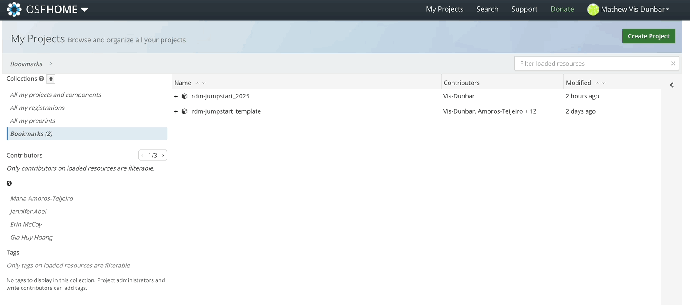

osfr
First, it is necessary to get an API key from OSF. Do this by heading
to your OSF project, your user settings, and selecting “create new
key”.

Keep that key safe, this is very important, ie don’t share it with
anyone.
That being said, we do need to store it somewhere so that
osfr can access it. The most sensible place, and where
osfr will look for it, is in a file called
.Renviron in your home folder. We will first check if a
.Renviron file exists already – if it does, we’ll add our
key to it – if it doesn’t, we’ll create it, and then add our key to
it.
To do this, we’ll use the ‘Terminal’ adjacent to the R Console.
# list all files in the home directory (~ is short for home, you can also try $HOME if ~ doesn't work)
# including hidden files (the -a does this)
# and then with grep, filter that list for the file name of interest
ls -a ~/ | grep ".Renviron"
If you’re presented with a blank line, .Renviron doesn’t
exist. So let’s create it.
touch ~/.Renviron
And we’ll write our API token or key to the file, copying and pasting
your key after the = sign below.
echo "OSF_PAT=" >> ~./Renviron
To validate this worked, you can run
cat ~./Renviron
You will need to restart R before this file and / or it’s new
information is accessible. To do this, go to
Session > Restart R from the RStudio menu.
Next, we install, if not already installed, and load,
osfr
install.packages("osfr")
library(osfr)
You should get the above output, indicating that osfr
has successfully found your API token so that you can authenticate.
Accessing your project
Next, we download the metadata associated with our OSF project.
You’ll need the url from the landing page of your OSF project.
jumpstart_project <- osf_retrieve_node("https://osf.io/uha5g/")
Then, we look at the list of files in our project:
js_files <- osf_ls_files(jumpstart_project)
js_files
A small caveat here, this works more easily with files than
directories, so we’ll simply explore this with a single file, like the
README.md file.
The meta column is a list of metadata associate with
each file – we need to access the unique id of the file we want to
download before we can download it. This is the same 5 digit
alphanumeric code that we would see if we loaded the file for viewing
within OSF. So, you could access it that way too.
readmeFile <- js_files$meta[[6]]$attributes$guid
readmeFile
We then download it. We need to resolve how to handle conflicts, and
here, I’m simply going to elect to overwrite any existing file with the
same name, as this is my first ‘pull’.
osf_retrieve_file(readmeFile) |>
osf_download(conflicts = "overwrite")
Since this is a markdown file, it can be opened and edited directly
in RStudio. Once you’re done for the day, we can send it back to OSF and
overwrite the one sitting on OSF servers.
osf_upload(jumpstart_project,
"README.md",
conflicts = "overwrite")
As long as you don’t change your file names, the unique ID of the
files never changes. So, once you know what you need to routinely back
up, you can get creative in automating this process using only
osf_upload() to overwrite what’s on OSF servers.
While OSF with provide access to the historical versions of these
overwrites that you are performing, osfr is not a version
control system, that is to say, it does not look for changes in files,
it does not compare dates on files, etc, it simply completely
overwrites.
LS0tDQp0aXRsZTogIm9zZnIiDQpwYWdldGl0bGU6ICJvc2ZyIg0Kb3V0cHV0Og0KICBodG1sX2RvY3VtZW50Og0KICAgIGNvZGVfZm9sZGluZzogc2hvdyAjIGFsbG93cyB0b2dnbGluZyBvZiBzaG93aW5nIGFuZCBoaWRpbmcgY29kZS4gUmVtb3ZlIGlmIG5vdCB1c2luZyBjb2RlLg0KICAgIGNvZGVfZG93bmxvYWQ6IHRydWUgIyBhbGxvd3MgdGhlIHVzZXIgdG8gZG93bmxvYWQgdGhlIHNvdXJjZSAuUm1kIGZpbGUuIFJlbW92ZSBpZiBub3QgdXNpbmcgY29kZS4NCiAgICBpbmNsdWRlczoNCiAgICAgIGFmdGVyX2JvZHk6IGZvb3Rlci5odG1sICMgaW5jbHVkZSBhIGN1c3RvbSBmb290ZXIuDQogICAgdG9jOiB0cnVlDQogICAgdG9jX2RlcHRoOiAzDQogICAgdG9jX2Zsb2F0Og0KICAgICAgY29sbGFwc2VkOiBmYWxzZQ0KICAgICAgc21vb3RoX3Njcm9sbDogZmFsc2UNCi0tLQ0KDQojIyBvc2ZyDQoNCkZpcnN0LCBpdCBpcyBuZWNlc3NhcnkgdG8gZ2V0IGFuIEFQSSBrZXkgZnJvbSBPU0YuIERvIHRoaXMgYnkgaGVhZGluZyB0byB5b3VyIE9TRiBwcm9qZWN0LCB5b3VyIHVzZXIgc2V0dGluZ3MsIGFuZCBzZWxlY3RpbmcgImNyZWF0ZSBuZXcga2V5Ii4NCg0KIVtdKGltYWdlcy9vc2Yvb3NmQVBJdG9rZW4uZ2lmKQ0KDQpLZWVwIHRoYXQga2V5IHNhZmUsIHRoaXMgaXMgdmVyeSBpbXBvcnRhbnQsIGllIGRvbid0IHNoYXJlIGl0IHdpdGggYW55b25lLg0KDQpUaGF0IGJlaW5nIHNhaWQsIHdlIGRvIG5lZWQgdG8gc3RvcmUgaXQgc29tZXdoZXJlIHNvIHRoYXQgYG9zZnJgIGNhbiBhY2Nlc3MgaXQuIFRoZSBtb3N0IHNlbnNpYmxlIHBsYWNlLCBhbmQgd2hlcmUgYG9zZnJgIHdpbGwgbG9vayBmb3IgaXQsIGlzIGluIGEgZmlsZSBjYWxsZWQgYC5SZW52aXJvbmAgaW4geW91ciBob21lIGZvbGRlci4gV2Ugd2lsbCBmaXJzdCBjaGVjayBpZiBhIGAuUmVudmlyb25gIGZpbGUgZXhpc3RzIGFscmVhZHkgLS0gaWYgaXQgZG9lcywgd2UnbGwgYWRkIG91ciBrZXkgdG8gaXQgLS0gaWYgaXQgZG9lc24ndCwgd2UnbGwgY3JlYXRlIGl0LCBhbmQgdGhlbiBhZGQgb3VyIGtleSB0byBpdC4NCg0KVG8gZG8gdGhpcywgd2UnbGwgdXNlIHRoZSAnVGVybWluYWwnIGFkamFjZW50IHRvIHRoZSBSIENvbnNvbGUuDQoNCmBgYHtiYXNoLCBldmFsID0gRkFMU0V9DQojIGxpc3QgYWxsIGZpbGVzIGluIHRoZSBob21lIGRpcmVjdG9yeSAofiBpcyBzaG9ydCBmb3IgaG9tZSwgeW91IGNhbiBhbHNvIHRyeSAkSE9NRSBpZiB+IGRvZXNuJ3Qgd29yaykNCiMgaW5jbHVkaW5nIGhpZGRlbiBmaWxlcyAodGhlIC1hIGRvZXMgdGhpcykNCiMgYW5kIHRoZW4gd2l0aCBncmVwLCBmaWx0ZXIgdGhhdCBsaXN0IGZvciB0aGUgZmlsZSBuYW1lIG9mIGludGVyZXN0DQpscyAtYSB+LyB8IGdyZXAgIi5SZW52aXJvbiINCmBgYA0KDQpJZiB5b3UncmUgcHJlc2VudGVkIHdpdGggYSBibGFuayBsaW5lLCBgLlJlbnZpcm9uYCBkb2Vzbid0IGV4aXN0LiBTbyBsZXQncyBjcmVhdGUgaXQuDQoNCmBgYHtiYXNoLCBldmFsID0gRkFMU0V9DQp0b3VjaCB+Ly5SZW52aXJvbg0KYGBgDQoNCkFuZCB3ZSdsbCB3cml0ZSBvdXIgQVBJIHRva2VuIG9yIGtleSB0byB0aGUgZmlsZSwgY29weWluZyBhbmQgcGFzdGluZyB5b3VyIGtleSBhZnRlciB0aGUgYD1gIHNpZ24gYmVsb3cuDQoNCmBgYHtiYXNoLCBldmFsID0gRkFMU0V9DQplY2hvICJPU0ZfUEFUPSIgPj4gfi4vUmVudmlyb24NCmBgYA0KDQpUbyB2YWxpZGF0ZSB0aGlzIHdvcmtlZCwgeW91IGNhbiBydW4NCg0KYGBge2Jhc2gsIGV2YWwgPSBGQUxTRX0NCmNhdCB+Li9SZW52aXJvbg0KYGBgDQoNCllvdSB3aWxsIG5lZWQgdG8gcmVzdGFydCBSIGJlZm9yZSB0aGlzIGZpbGUgYW5kIC8gb3IgaXQncyBuZXcgaW5mb3JtYXRpb24gaXMgYWNjZXNzaWJsZS4gVG8gZG8gdGhpcywgZ28gdG8gYFNlc3Npb24gPiBSZXN0YXJ0IFJgIGZyb20gdGhlIFJTdHVkaW8gbWVudS4NCg0KTmV4dCwgd2UgaW5zdGFsbCwgaWYgbm90IGFscmVhZHkgaW5zdGFsbGVkLCBhbmQgbG9hZCwgYG9zZnJgDQoNCmBgYHtyLCBldmFsID0gRkFMU0V9DQppbnN0YWxsLnBhY2thZ2VzKCJvc2ZyIikNCmxpYnJhcnkob3NmcikNCmBgYA0KDQpgYGB7ciwgZWNobyA9IEZBTFNFfQ0KbGlicmFyeShvc2ZyKQ0KYGBgDQoNCllvdSBzaG91bGQgZ2V0IHRoZSBhYm92ZSBvdXRwdXQsIGluZGljYXRpbmcgdGhhdCBgb3NmcmAgaGFzIHN1Y2Nlc3NmdWxseSBmb3VuZCB5b3VyIEFQSSB0b2tlbiBzbyB0aGF0IHlvdSBjYW4gYXV0aGVudGljYXRlLg0KDQojIyBBY2Nlc3NpbmcgeW91ciBwcm9qZWN0DQoNCk5leHQsIHdlIGRvd25sb2FkIHRoZSBtZXRhZGF0YSBhc3NvY2lhdGVkIHdpdGggb3VyIE9TRiBwcm9qZWN0LiBZb3UnbGwgbmVlZCB0aGUgdXJsIGZyb20gdGhlIGxhbmRpbmcgcGFnZSBvZiB5b3VyIE9TRiBwcm9qZWN0Lg0KDQpgYGB7ciwgZXZhbCA9IEZBTFNFfQ0KanVtcHN0YXJ0X3Byb2plY3QgPC0gb3NmX3JldHJpZXZlX25vZGUoImh0dHBzOi8vb3NmLmlvL3VoYTVnLyIpDQpgYGANCg0KVGhlbiwgd2UgbG9vayBhdCB0aGUgbGlzdCBvZiBmaWxlcyBpbiBvdXIgcHJvamVjdDoNCg0KYGBge3IsIGV2YWwgPSBGQUxTRX0NCmpzX2ZpbGVzIDwtIG9zZl9sc19maWxlcyhqdW1wc3RhcnRfcHJvamVjdCkNCmpzX2ZpbGVzDQpgYGANCg0KQSBzbWFsbCBjYXZlYXQgaGVyZSwgdGhpcyB3b3JrcyBtb3JlIGVhc2lseSB3aXRoIGZpbGVzIHRoYW4gZGlyZWN0b3JpZXMsIHNvIHdlJ2xsIHNpbXBseSBleHBsb3JlIHRoaXMgd2l0aCBhIHNpbmdsZSBmaWxlLCBsaWtlIHRoZSBSRUFETUUubWQgZmlsZS4NCg0KVGhlIGBtZXRhYCBjb2x1bW4gaXMgYSBsaXN0IG9mIG1ldGFkYXRhIGFzc29jaWF0ZSB3aXRoIGVhY2ggZmlsZSAtLSB3ZSBuZWVkIHRvIGFjY2VzcyB0aGUgdW5pcXVlIGlkIG9mIHRoZSBmaWxlIHdlIHdhbnQgdG8gZG93bmxvYWQgYmVmb3JlIHdlIGNhbiBkb3dubG9hZCBpdC4gVGhpcyBpcyB0aGUgc2FtZSA1IGRpZ2l0IGFscGhhbnVtZXJpYyBjb2RlIHRoYXQgd2Ugd291bGQgc2VlIGlmIHdlIGxvYWRlZCB0aGUgZmlsZSBmb3Igdmlld2luZyB3aXRoaW4gT1NGLiBTbywgeW91IGNvdWxkIGFjY2VzcyBpdCB0aGF0IHdheSB0b28uDQoNCmBgYHtyLCBldmFsID0gRkFMU0V9DQpyZWFkbWVGaWxlIDwtIGpzX2ZpbGVzJG1ldGFbWzZdXSRhdHRyaWJ1dGVzJGd1aWQNCnJlYWRtZUZpbGUNCmBgYA0KDQpXZSB0aGVuIGRvd25sb2FkIGl0LiBXZSBuZWVkIHRvIHJlc29sdmUgaG93IHRvIGhhbmRsZSBjb25mbGljdHMsIGFuZCBoZXJlLCBJJ20gc2ltcGx5IGdvaW5nIHRvIGVsZWN0IHRvIG92ZXJ3cml0ZSBhbnkgZXhpc3RpbmcgZmlsZSB3aXRoIHRoZSBzYW1lIG5hbWUsIGFzIHRoaXMgaXMgbXkgZmlyc3QgJ3B1bGwnLg0KDQpgYGB7ciwgZXZhbCA9IEZBTFNFfQ0Kb3NmX3JldHJpZXZlX2ZpbGUocmVhZG1lRmlsZSkgfD4NCiAgb3NmX2Rvd25sb2FkKGNvbmZsaWN0cyA9ICJvdmVyd3JpdGUiKQ0KYGBgDQoNClNpbmNlIHRoaXMgaXMgYSBtYXJrZG93biBmaWxlLCBpdCBjYW4gYmUgb3BlbmVkIGFuZCBlZGl0ZWQgZGlyZWN0bHkgaW4gUlN0dWRpby4gT25jZSB5b3UncmUgZG9uZSBmb3IgdGhlIGRheSwgd2UgY2FuIHNlbmQgaXQgYmFjayB0byBPU0YgYW5kIG92ZXJ3cml0ZSB0aGUgb25lIHNpdHRpbmcgb24gT1NGIHNlcnZlcnMuDQoNCmBgYHtyLCBldmFsID0gRkFMU0V9DQpvc2ZfdXBsb2FkKGp1bXBzdGFydF9wcm9qZWN0LA0KICAgICAgICAgICAiUkVBRE1FLm1kIiwNCiAgICAgICAgICAgY29uZmxpY3RzID0gIm92ZXJ3cml0ZSIpDQpgYGANCg0KQXMgbG9uZyBhcyB5b3UgZG9uJ3QgY2hhbmdlIHlvdXIgZmlsZSBuYW1lcywgdGhlIHVuaXF1ZSBJRCBvZiB0aGUgZmlsZXMgbmV2ZXIgY2hhbmdlcy4gU28sIG9uY2UgeW91IGtub3cgd2hhdCB5b3UgbmVlZCB0byByb3V0aW5lbHkgYmFjayB1cCwgeW91IGNhbiBnZXQgY3JlYXRpdmUgaW4gYXV0b21hdGluZyB0aGlzIHByb2Nlc3MgdXNpbmcgb25seSBgb3NmX3VwbG9hZCgpYCB0byBvdmVyd3JpdGUgd2hhdCdzIG9uIE9TRiBzZXJ2ZXJzLg0KDQo6Ojpub3RlDQpXaGlsZSBPU0Ygd2l0aCBwcm92aWRlIGFjY2VzcyB0byB0aGUgaGlzdG9yaWNhbCB2ZXJzaW9ucyBvZiB0aGVzZSBvdmVyd3JpdGVzIHRoYXQgeW91IGFyZSBwZXJmb3JtaW5nLCBgb3NmcmAgaXMgbm90IGEgdmVyc2lvbiBjb250cm9sIHN5c3RlbSwgdGhhdCBpcyB0byBzYXksIGl0IGRvZXMgbm90IGxvb2sgZm9yIGNoYW5nZXMgaW4gZmlsZXMsIGl0IGRvZXMgbm90IGNvbXBhcmUgZGF0ZXMgb24gZmlsZXMsIGV0YywgaXQgc2ltcGx5IGNvbXBsZXRlbHkgb3ZlcndyaXRlcy4NCjo6Og0KDQoNCg0KDQoNCg0KDQo=